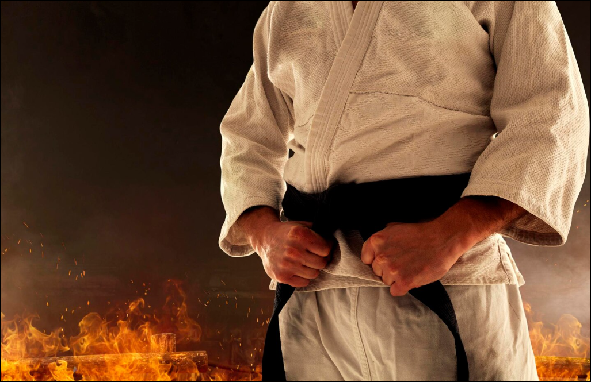
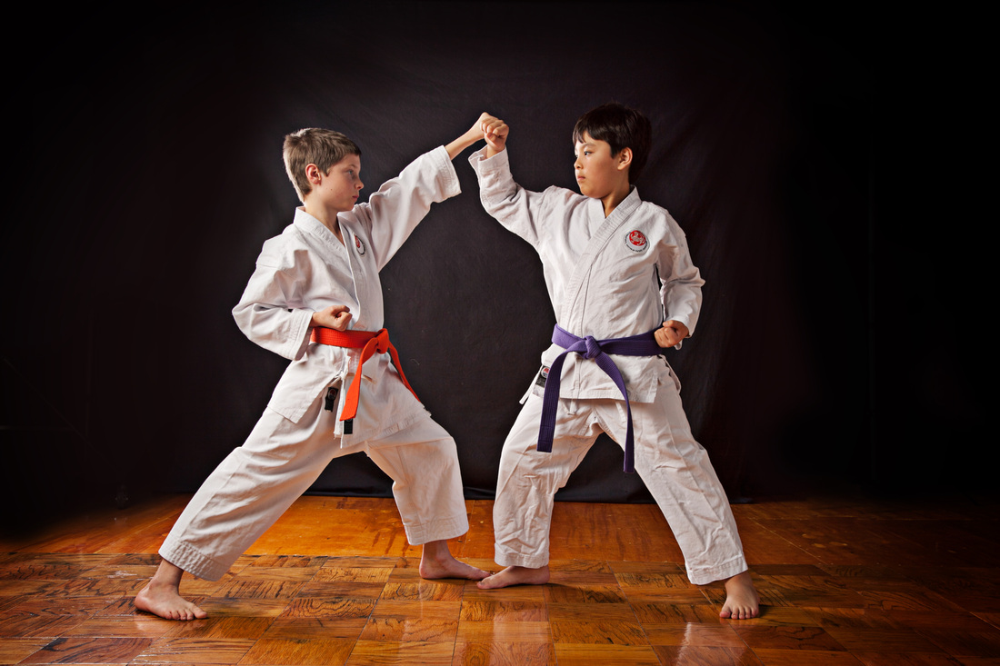

O que é?
O Dia do Karatê é uma data comemorativa dedicada a celebrar a história, a filosofia e a prática do karatê em todo o mundo. Mais do que uma arte marcial voltada apenas para combate, o karatê é considerado um caminho de desenvolvimento pessoal, que une disciplina física, mental e respeito mútuo entre os praticantes.
Essa data serve para reconhecer a importância cultural da arte marcial originada em Okinawa, no Japão, e sua evolução ao longo dos séculos até se tornar uma prática global. Em diferentes países, dojos, federações e praticantes utilizam esse dia para reforçar os valores tradicionais, promover eventos e compartilhar o karatê com novas pessoas, aproximando iniciantes da filosofia marcial.
As datas do Dia do Karatê

O Dia do Karatê pode variar de acordo com o país, organização ou federação, mas uma das datas mais reconhecidas internacionalmente é 25 de outubro, escolhida em referência à oficialização do termo “karatê” no Japão e à sua consolidação como arte marcial moderna.
Além dessa data, em Okinawa e em diversas associações tradicionais, também são realizadas celebrações em outros períodos do ano, muitas vezes ligadas à história da arte marcial, aos seus mestres mais importantes e a eventos históricos do seu desenvolvimento. Essas variações mostram como o karatê é uma prática viva e em constante evolução, adaptando-se a diferentes culturas e contextos ao redor do mundo sem perder sua essência.
O que acontece nesse dia

No Dia do Karatê, academias e dojos costumam realizar demonstrações, treinos especiais e eventos abertos ao público, com o objetivo de divulgar a arte marcial e aproximar a comunidade. Praticantes de diferentes níveis participam de atividades que incluem katas tradicionais, combates controlados (kumite) e apresentações técnicas que demonstram disciplina e controle corporal.
Também é comum a realização de homenagens a mestres antigos, palestras sobre filosofia marcial e encontros entre diferentes escolas e estilos de karatê. Em muitos lugares, o foco principal do evento é não apenas a prática física, mas também o reforço dos valores de respeito, disciplina, humildade e superação pessoal, que fazem parte da essência do karatê desde sua origem.